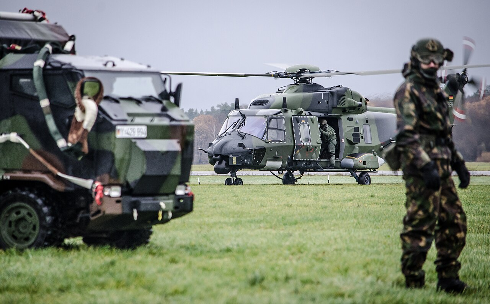

// De constructie · elk detail heeft een taak
Klaar voor transport
tot in de details
Wat er onderweg gebeurt telt mee in het ontwerp. Van het eerste handvat tot het laatste sluitwerk.

01
Beschermde hoeken
Metalen balhoeken en aluminium profielen vangen de klap op de plek waar een kist het eerst stukgaat.
02
Grip op transport
Verzonken handgrepen klappen terug tegen de wand, zodat er niets achter blijft haken bij het laden.
03
Verzonken sluitwerk
Vlindersloten sluiten het deksel en steken niet uit. Te bedienen met handschoenen aan.
04
Verplaatsen op wielen
Zwenkwielen met rem waar het gewicht erom vraagt. De keuze begint bij tilgrens en ondergrond.
Afgebeeld: trunccase. De uitvoering wordt afgestemd op jouw toepassing.
Bekijk dit casetype →